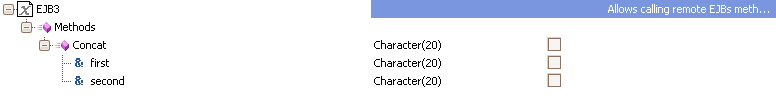
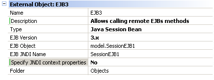
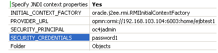
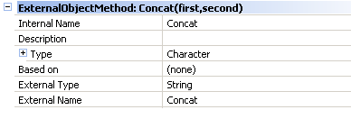
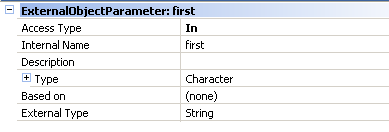

External Objects typed as "Java Session Beans" allow calling Java Session Beans hosted in a JEE server. The Java Session Bean EO will store all the necessary information to make the call to the Session EJB regarding context parameters, EJB interfaces etc. Once the EO has been defined we will be able to invoke the real EJB in the same way we use any other GeneXus object.  PropertiesExternal Object
Name: name of the EO When setting "Specify JNDI context properties = YES" the following properties are displayed: 
INITIAL_CONTEXT_FACTORY: initial context factory class Methods
Internal Name: internal name of the method Parameters
Access Type: it indicates whether the parameter is an input only, output only, or input/output parameter. UseSuppose that we want to call a Session EJB located in another server. Basically, we will follow 2 steps:
For the first step, the Session EJB developer must provide us with the JAR package containing the EJB interfaces needed to make the call. Once we have the jar file we must place it in the model classpath and then create the EO according to the interfaces given in the jar file (of course it is also necessary to specify the JNDI name and probably its context properties). It will also be necessary to add a jar file with the standard classes needed when invoking EJBs (containing implementations of EJBLocalHome, EJBLocalObject etc.). This jar file may be different according to the version of the EJB being called (2.x or 3.x) and its name may be ejb.jar ejb3.jar o similar. Once the EO has been defined we simply use it as any other GX object. E.g: Event Enter &first = "Hello " &second = "Session Beans" &concat = &externalObj.Concat(&first, &second) msg(&concat) //prints "Hello Session Beans" EndEvent &externalObj is a variable based on the EO for the Session EJB, &concat-&first-&second are character variables and Concat is a method in the EO that matches a method in the EJB. As shown, the Concat being called returns the concatenation of two character variables. DeploymentWhen deploying the application through the GeneXus Deployment Wizard it is necessary to add the EJB provider jar file as an additional library.
|
| Backlinks |
| Category:External object |